Когда-то Никитос был маленьким. Сам он хотел бы забыть об этих временах, но решил, что будет весело показать фотки из детства коллегам, чтобы угореть вместе.
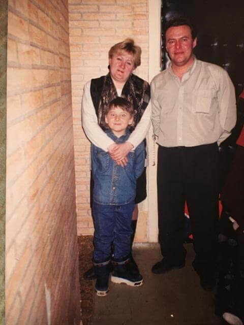Мой папка когда-то был иконой стиля.
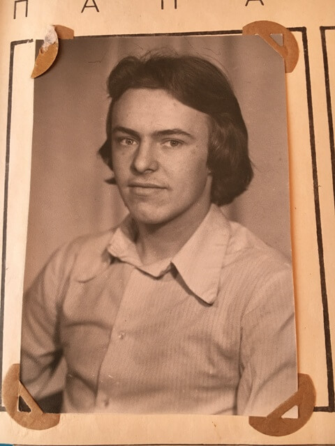Первые лет 20 моей жизни родители очень хотели, чтобы у меня была прическа как у отца — но у них ничего не вышло.
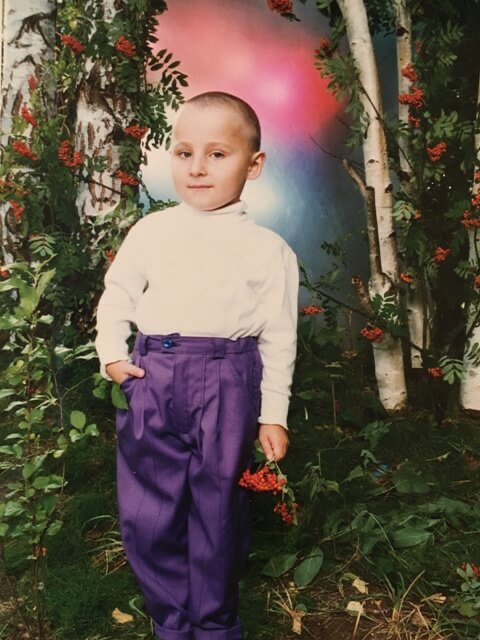В детстве унизительней всего было то, что приходилось носить колготки, а прохожие путали меня с девочкой.
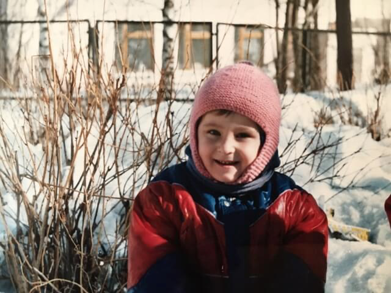Маленький Никитос больше всего не любил манную кашу и стоматологов. Впрочем, с тех пор ничего не изменилось.
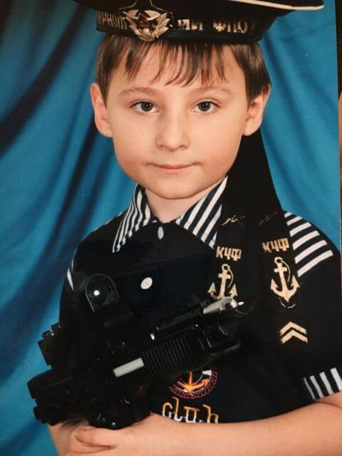Если приглядеться, то здесь у Никитоса прическа, как у Адольфа Гитлера.
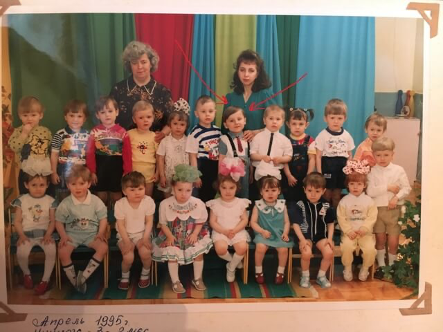Когда мне было 8, моя мама увлеклась выпечкой. Получалось у нее очень вкусно!
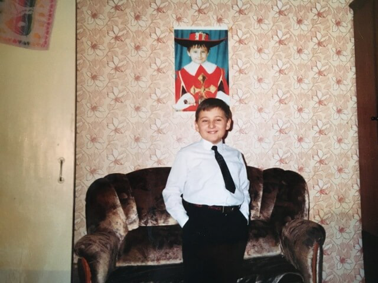В школе пытался научиться играть на гитаре. Играю ужасно, но зато на фотках неплохо выхожу.
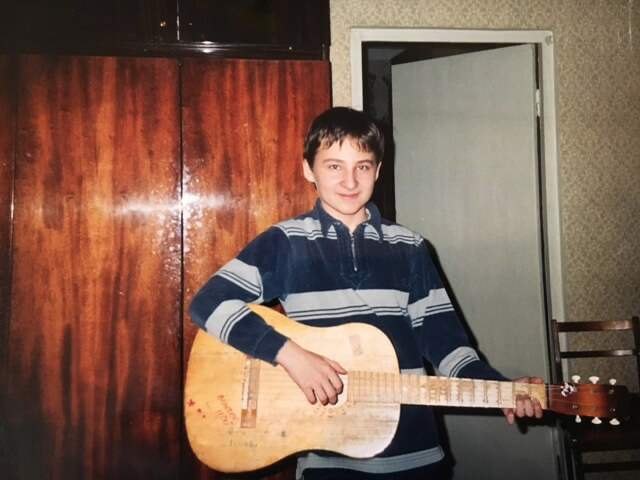Когда был в 7-ом классе, то все тащились от Эминема. От музыки я не проперся, но думал, что реперы выглядят дико круто (никогда так не ошибался!).
Мне до сих пор кажется, что в 8 классе я был неотразим.
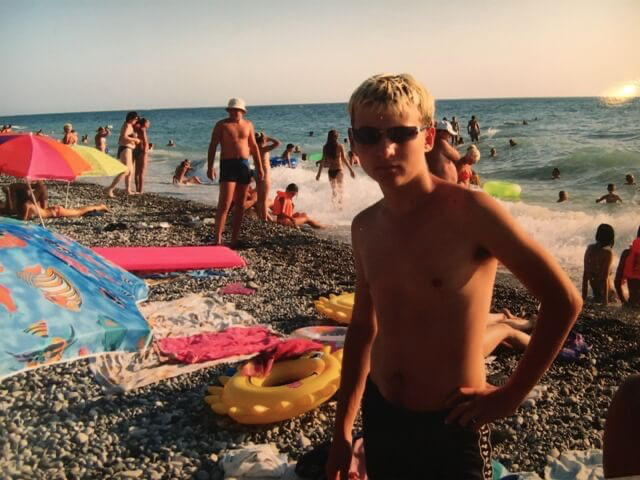В пубертатном периоде был тем еще бунтарем — начинал и бросал курить, шкерился по подъездам и крышам, попадал в милицию. Других бандитских фоток не сохранилось!
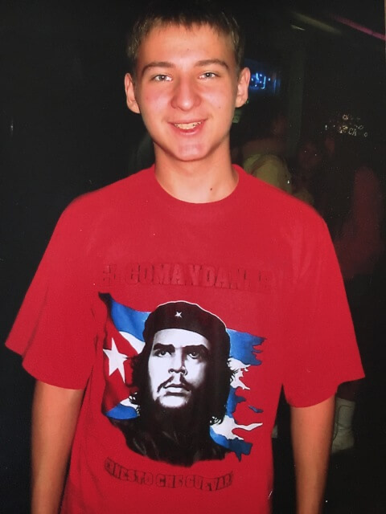Несколько лет работал вожатым. С детьми работать весело, но нервно — до сих пор подрываюсь, вспоминая детские кричалки и игры с отрядом.
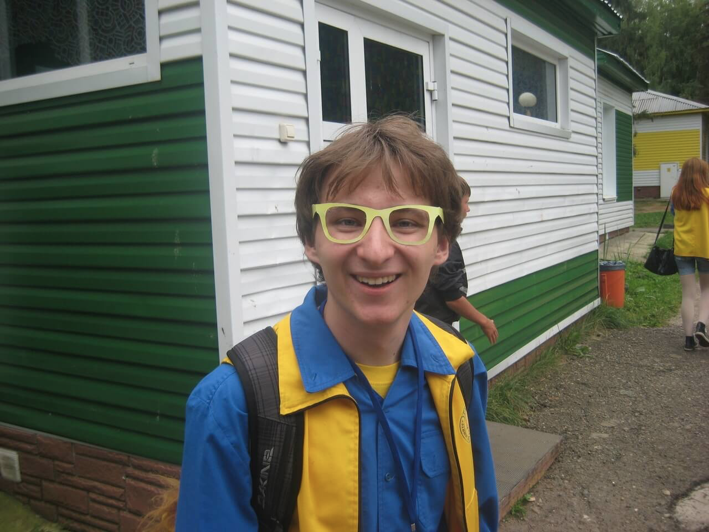Сейчас покорный слуга выглядит как-то так. Спасибо за внимание, вы восхитительны! ^_^
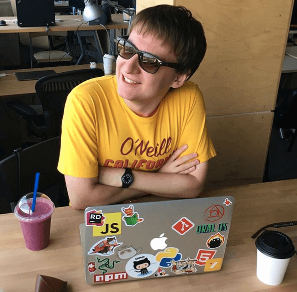